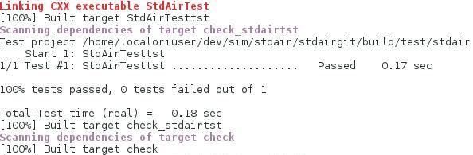

Getting started
There are many ways to get started with Travel Simulator and this page is here to give you all the information you need to do so easily.
Choosing which flavor is the right for you is pretty easy. If you are looking to use Travel Simulator as soon as possible in a preconfigured environment you can go to the online version or download the preconfigured virtual machine and import it into Virtual Box. If your goal is to have the most amount of fun, start contributing or simply dig deep into Travel Simulator, you can get the source code on Github.
Travel Simulator comes in different flavors :
Online Demo
Pre-installed in a downloadable virtual machine
First download the latest version of VirtualBox here.
Then download the VirtualBox Appliance here.
When you finished installing VirtualBox follow these steps:
- File
- Import Appliance
- Open Appliance...
Select the .OVA file you just downloaded and import the machine.
Once Virtual Box finished the setup simply run it.
Packaged
Packaged Version
The easier way of getting started is to download all the simulator modules in one shot using the metasim component. You need to be working in a Linux/Unix environment. If not, try out the online version or download the virtual box appliance to get all you need in one big package. If you are only interested by a specific module, or by individual component packages, you can find the module by module installation guide below.
Metasim installation
Enter the chosen working directory, for instance:
cd ~/dev
Clone the metasim project from the github environment:
git clone git@github.com:airsim/metasim.git metasimgit
cd ~/dev/metasimgit
Copy and edit the metasim.yaml file with your own details (check you firewall settings if necessary):
cp metasim.yaml.sample metasim.yaml
Clone, configure, install and check all the components with the commands:
rake clone && rake configure && rake install && rake check
To have the list of all available commands, try:
rake --tasks
Run the local binary version to perform your first simulation:
./workspace/build/tvlsim/tvlsim/simulatePlease go to the tutorial section to learn more about the simulation tools available and how to use them.
Module by Module Installation
StdAir Installation
Follow the steps below to download, build and install StdAir.
Get the StdAir libraryClone locally the full git project:
cd ~Build the StdAir project
mkdir dev
cd ~/dev/
git clone git@github.com:airsim/stdair.git stdairgit
cd stdairgit
git checkout trunk
Configure, compile and install using the following commands:
cd ~/dev/stdairgitRun the Tests
rm -rf build && mkdir -p build
cd build
cmake -DCMAKE_INSTALL_PREFIX=/home/[user]/dev/deliveries/stdair-99.99.99 \
-DLIB_SUFFIX=64 -DCMAKE_BUILD_TYPE:STRING=Debug -DINSTALL_DOC:BOOL=ON ..
make install
After building the StdAir project, the following commands run the tests:
cd ~/dev/stdairgitAs a result, you should obtain a similar report:
cd build
make check
Update the StdAir deliveries
Have the latest StdAir release 'tagged' as the stable one:
cd ~/dev/deliveries
rm -f stdair-stable
ln -s stdair-99.99.99 stdair-stable
Other module installation
In order to install another specific module, you need to check its dependencies in the dependency tree. For instance, we are going to focus on the demand generation module TraDemGen.
Clone locally the full git project:cd ~/dev
git clone git@github.com:airsim/trademgen.git trademgengit
cd trademgengit
git checkout trunk
mkdir -p build && cd build
As illustrated in the dependency tree, the only dependencies of TraDemgen are the StdAir and SEvMgr libraries. That is why the StdAir and SEvMgr releases, which will be used to build the Trademgen component, need to be specified:
cmake -DCMAKE_INSTALL_PREFIX=/home/[user]/dev/deliveries/trademgen-99.99.99 \Of course, you are supposed to have previously cloned, built and installed the SEvMgr library following exactly the same process as for StdAir. Do not forget that SEvMgr depends on StdAir as well!
-DWITH_STDAIR_PREFIX=/home/[user]/dev/deliveries/stdair-stable \
-DWITH_SEVMGR_PREFIX=/home/[user]/dev/deliveries/sevmgr-stable \
-DLIB_SUFFIX=64 -DCMAKE_BUILD_TYPE:STRING=Debug -DINSTALL_DOC:BOOL=ON ..
If encounter any problem, try:
export LD_LIBRARY_PATH=$LD_LIBRARY_PATH:/home/[user]/dev/deliveries/stdair-stable/lib
Build, install the demand generation library and perform tests:
make & make install && make check
Run the local binary version to generate your first booking requests:
./trademgen/trademgen_generateDemand -bPlease go to the tutorial section to learn more about the simulation tools available and how to use them.